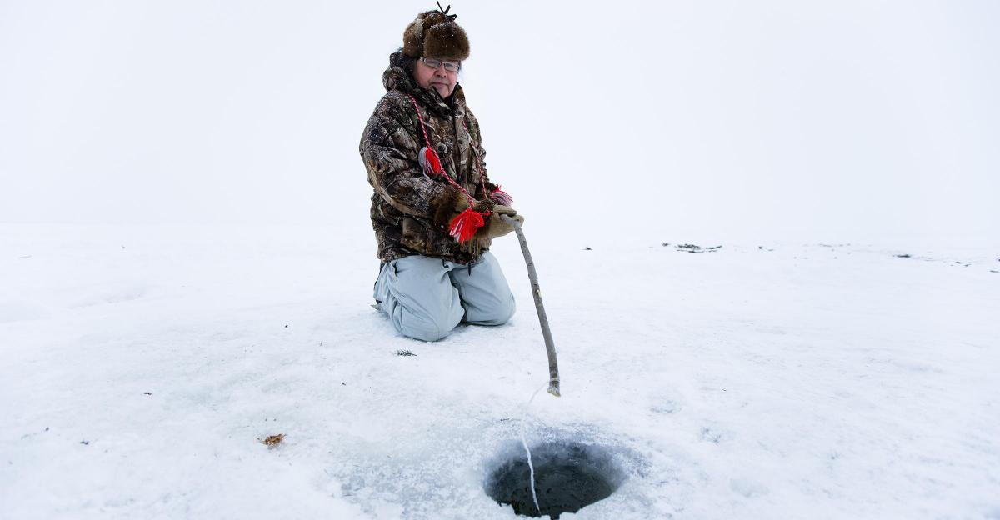
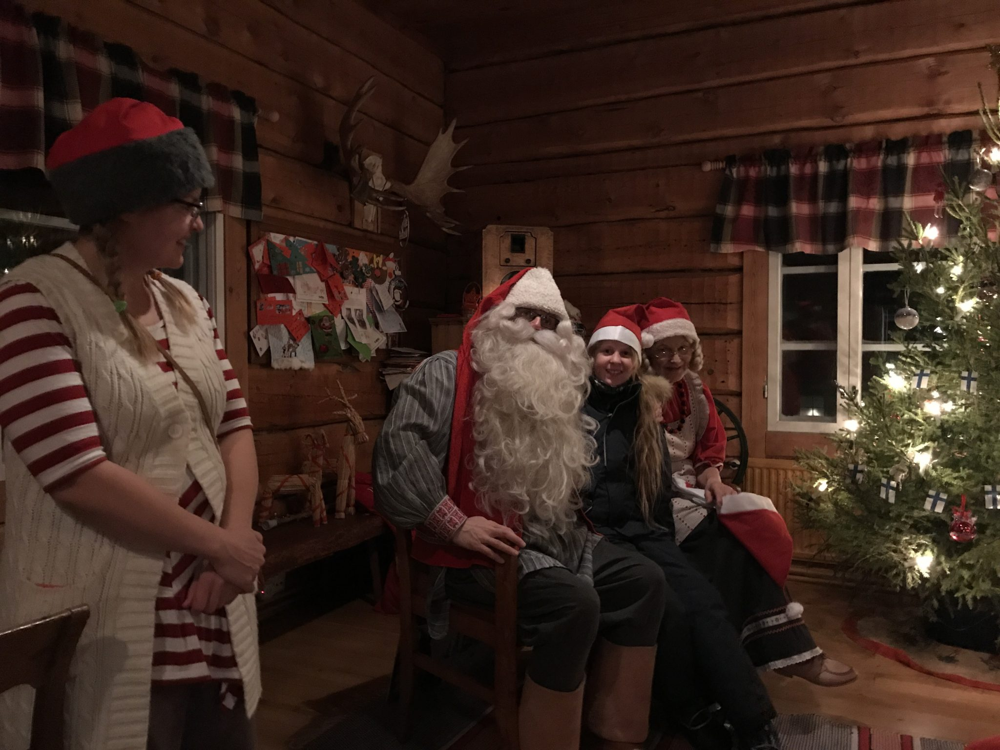
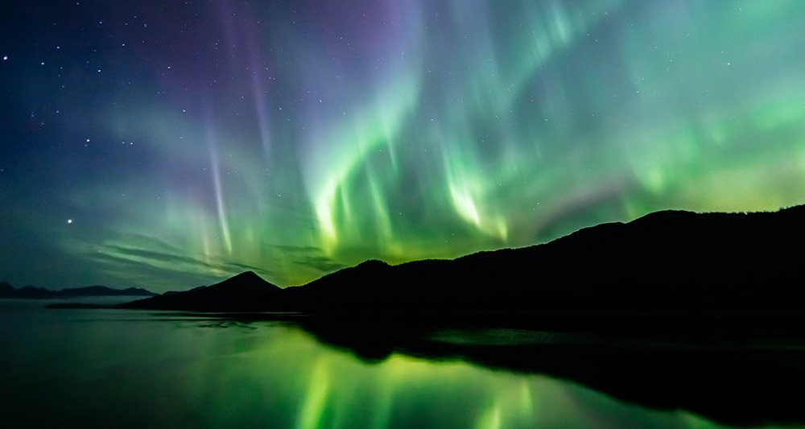
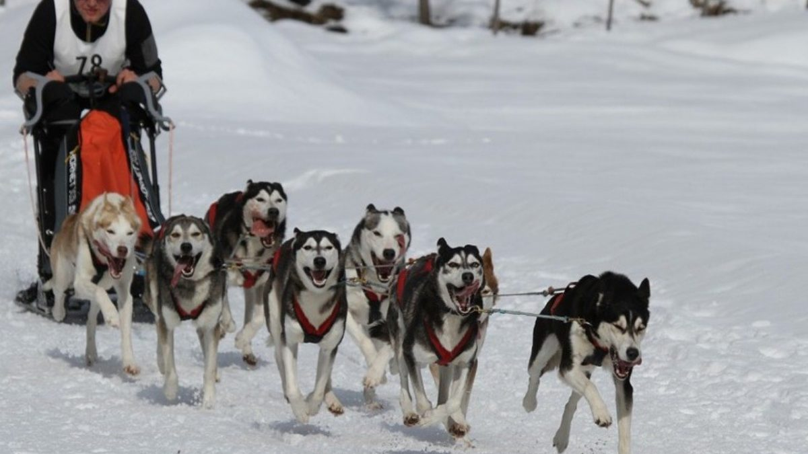

In het kort:
Finland zit vol interessante, wonderschone en soms mystieke plekken. Het land van de duizend meren, het land van Santa Claus, het land met het noorderlicht. Je kunt het zo koud niet bedenken en de Finnen hebben er wat voor. Wil je juist meer weten over de geschiedenis en cultuur van Finland? ga dan door naar de pagina: cultuur.
IJsvissen
IJsvissen óf wakvissen is een vorm van vissen, waarbij men vissen probeert te vangen met een vishaak of speer door een gat is het ijs van bijvoorbeeld een bevroren meer of vijver.
Deze vorm van vissen wordt tegenwoordig vooral beoefend als sportvissen. Er bestaan zelfs toernooien voor.
Santa's village
Rovaniemi is gelegen te noorden van Finland. Het is er tijdens de winter vaak tot 25 graden onder nul én is met een dik pak snel een waar winter wonderland.
In Rovaniemi kun je zelf binnenstappen in "Santa's village". Je kunt je eigen kerstkaart versturen regelrecht vanuit met een échte stempel van de kerstman. De rendieren staan klaar voor een rondje en overal lopen elfen rond om jou te voorzien van alle informatie over het dorp.
Aurora hunting
EenAurora óf noorderlicht is een uniek lichtverschijnsel dat op hoge geografische breedtes bij duisternis kan worden waargenomen. Het zien ervan is bijna een mystieke ervaring. Als het noorderlicht zich voordoet, zien we vaak een lichte gloed of is het licht zichtbaar als bewegende bogen. Ga voor meer informatie naar www.27vakantiedagen.nl.
Tocht op sneeuwschoenen
Als kind heb je ze vast vaak verward met je tennisracket. Sneeuwschoenen zoals ze worden genoemd worden gebruikt om op dikke lagen sneeuw fatsoenlijk te kunnen lopen. Zonder de schoenen, zak je hier namelijk makkelijk doorheen. Met zulke schoenen kun je geweldige tochten maken, die leiden toch indrukwekkende en betoverende beelden van de natuur in een dik pak sneeuw.
Vervoer per husky
Met stip op één van menig bucketlist: de huskysafari Lapland. En dat is niet voor niets, want we kunnen beamen dat veel reizigers de huskyslee het absolute hoogtepunt van hun vakantie in Fins en Zweeds Lapland vinden.
De huskysafari's hebben een ongekend uithoudingsvermogen en werden daarom al in vroegere tijdensingezet om sledes voor te trekken en zo als vervoersmiddel te dienen. Nog steeds wordt de huskyslede als praktisch vervoersmiddel ingezet door de zogenoemde 'musher': jongeren die het rijden met de honden willen leren.